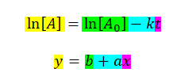
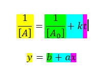
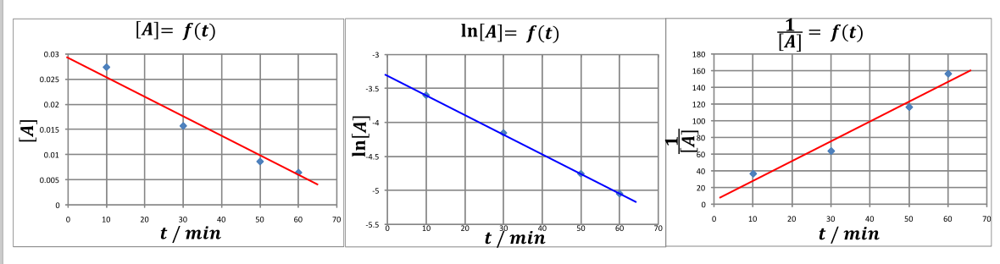
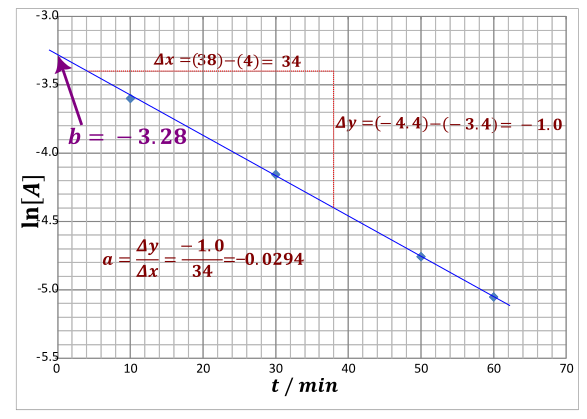
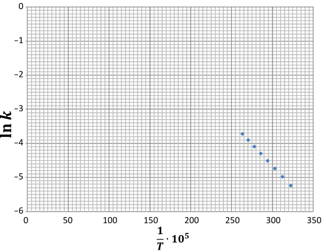
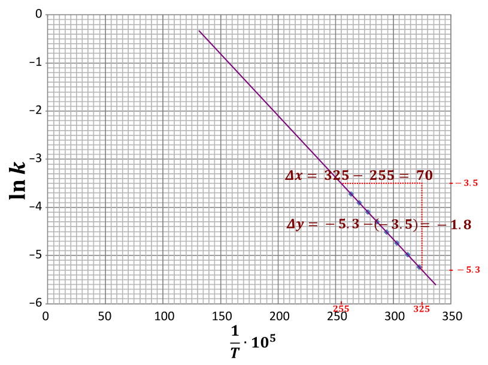
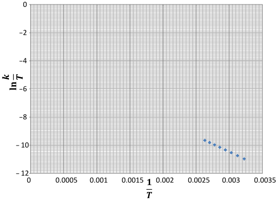
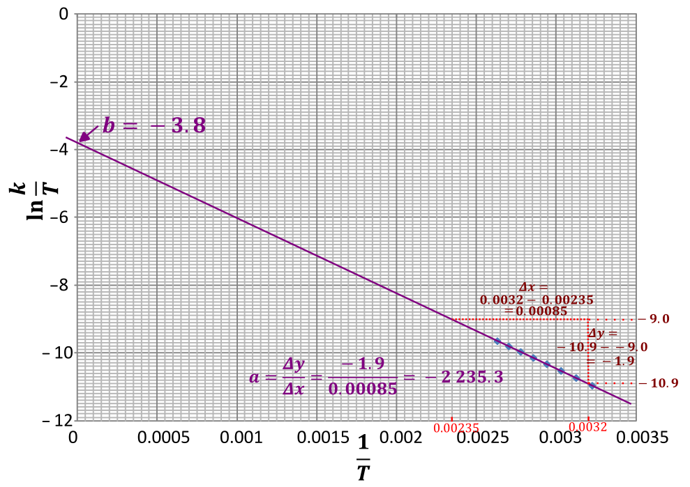
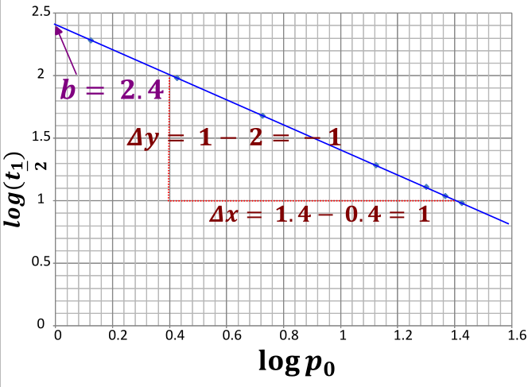

Linearyzacja jest metodą wyznaczania parametrów równania, zmiennych w tym równaniu przez doprowadzenie równania do postaci liniowej, tak aby na osi \(y\) można było odkładać wartości zmiennej uzyskiwanej, a na osi \(x\) wartości zmiennej wprowadzanej do układu. Kolejne eksperymenty symbolizowane są przez kolejne punkty na wykresie tej prostej. Mając taki wykres z łatwością można potwierdzić lub zaprzeczyć postulowanej zależności - zależność jest tak dobrana, aby punkty te układały się na linii prostej – a więc jeżeli układają się to znaczy, że zależność jest spełniona, natomiast, jeżeli nie układają się znaczy, że postulowana zależność nie jest prawdziwa. Widząc, iż punktu doświadczalne układają się na linii prostej jesteśmy w stanie wyznaczyć wartości wyrazu wolnego i współczynnika nachylenia otrzymanej prostej, a znając ich interpretacje fizyczną obliczyć wartości interesujących mnie wartości fizycznych. Jednocześnie linearyzacja ma wiele zastosowań w chemii, biologii i innych naukach inżynierskich. Jej szczególną zaletą nad innymi metodami wyznaczania wartości jest łatwość interpretacji przy dużej ilości punktów pomiarowych – kolejny eksperyment symbolizowany jest przez kolejny punkt pomiarowy, i nie wymaga wielu dodatkowych obliczeń związanych z uśrednianiem wyników.
Przykładem zastosowania linearyzacji jest wyznaczanie kinetycznych rzędów reakcji tak zwaną metodą graficzno – całkową.
Dla reakcji zerowego rzędu scałkowane równanie kinetyczne ma postać :
\[\left\lbrack A(t) \right\rbrack = \left\lbrack A_{0} \right\rbrack - kt\]
W przedstawionym wzorze \(\left\lbrack A(t \right)\rbrack\) oznacza stężenie reagenta A po czasie interesującym nas czasie. \(\lbrack A_{0}\rbrack\) to stężenie początkowe. \(k\) to stała szybkości reakcji, a \(t\) to czas
\[\left\lbrack A(t) \right\rbrack = \left\lbrack A_{0} \right\rbrack - kt\]
Umieszczając na wykresie\(\left\lbrack A(t) \right\rbrack\) w zależności od czasu \(t\) powinniśmy uzyskać linię prostą, jednocześnie możemy stwierdzić, iż jeżeli wykres \(\lbrack A(t)\rbrack\) od czasu jest linią prostą to reakcja jest zerowego rzędu, co widać jednoznacznie porównując równanie i ogólny równanie funkcji liniowej:
\[\left\lbrack A(t) \right\rbrack = \left\lbrack A_{0} \right\rbrack - kt\]
\[y = b + ax\]
Jednocześnie widzimy, iż wyraz wolny wyznaczonej prostej jest wtedy równy stężeniu początkowemu reagenta \(A_{0}\), natomiast współczynnik kierunkowy jest równy \(–k\).
I rząd
Po scałkowaniu otrzymujemy równanie kinetyczne dla reakcji pierwszego rzędu:
\[\ln\left\lbrack A(t) \right\rbrack = \ln\left\lbrack A_{0} \right\rbrack - kt\]
W którym występuje symbol \(\ln{(\
)}\).Oznacza on logarytm o podstawie liczby Eulera \(e\) - liczby niewymiernej, a więc z gatunku
takich jak \(\pi\), w tym wypadku jest
to wartość \(e\) równa \(2.78\ldots\ \). Można oznaczyć ten symbol
również jako \({\log_{e}()}\ \).
Odwrotnością logarytmu naturalnego jest liczba Eulera podniesiona do
odpowiedniej potęgi, co można zapisać jako \(\ln x = a\overset{\ }{\Leftrightarrow}x =
e^{a}\). W praktyce dla nas oba wyrażenia znaczą tyle, co symbol
na kalkulatorze. W równaniu występuje jeszcze \(\lbrack A(t)\rbrack\) oraz \(\lbrack A_{0}\rbrack\) – stężenie molowe
substratu odpowiednia po określonym czasie oraz na początku reakcji,
\(k\) - stała szybkości reakcji, \(t\) – czas prowadzenia reakcji.
Równanie
\[\ln\left\lbrack A(t) \right\rbrack =
\ln\left\lbrack A_{0} \right\rbrack - kt\]
możemy przekształcić do postaci
\[\ln\frac{\left\lbrack A(t) \right\rbrack}{\left\lbrack A_{0} \right\rbrack} = - kt\]
Co wykorzystując prawa działań na logarytmach prowadzi na do równania:
\[\frac{\left\lbrack A(t) \right\rbrack}{\left\lbrack A_{0} \right\rbrack} = e^{- kt} \rightarrow \left\lbrack A(t) \right\rbrack = \lbrack A_{0}\rbrack e^{- kt}\ \ \ \ e = 2.78\ldots.\]
Który to wzór umożliwia obliczenie stężenia reagenta \(\lbrack A(t)\rbrack\) po czasie
Równanie:
\[\ln\left\lbrack A(t) \right\rbrack = \ln\left\lbrack A_{0} \right\rbrack - kt\]
Mogę również przekształcić do postaci z logarytmem dziesiętnym, wykorzystując wzór na zamianę logarytmów: \(\ln{\left\lbrack A(t) \right\rbrack = \ln 10{·log}_{10}{\lbrack A(t)\rbrack}}\)
\[\ln\left\lbrack A(t) \right\rbrack = \ln\left\lbrack A_{0} \right\rbrack - kt\]
\[\ln 10{·log}_{10}{\lbrack A(t)\rbrack} = \ln 10{·log}_{10}{\lbrack A_{0}\rbrack} - kt\]
\[\log_{10}{\lbrack A(t)\rbrack}{= log}_{10}{\lbrack A_{0}\rbrack} - \frac{kt}{\ln 10}\]
\[\log_{10}\left\lbrack A(t) \right\rbrack{= log}_{10}\left\lbrack A_{0} \right\rbrack - 0.4343kt\]
Analizując wyprowadzony uprzednio wzór widzimy,
\[\ln\left\lbrack A(t) \right\rbrack = \ln\left\lbrack A_{0} \right\rbrack - kt\]
że wykres przedstawiający zależność logarytmu naturalnego stężenia reagenta od czasu \(\ln\left\lbrack A(t) \right\rbrack = f(t)\) musi być linią prostą

Dla którego można powiedzieć, że wyraz wolny \(b\) - wartość przecięcia się z osią OY równy jest \(\ln\left\lbrack A_{0} \right\rbrack,\) natomiast współczynnik kierunkowy wynosi \(a = - k\).
Również bazując na zmodyfikowanym wyrażeniu, w którym występują logarytmy dziesiętne, widzimy, że wykres logarytmu dziesiętnego ze stężenia substratu \(\log_{10}{\lbrack A(t)\rbrack}\) od czasu \(t\),
\[\log_{10}\left\lbrack A(t) \right\rbrack{= log}_{10}\left\lbrack A_{0} \right\rbrack - 0.4343kt\]
Powinien być linią prostą, dla której wyraz wolny \(b = \log_{10}{\lbrack A_{0}\rbrack}\), natomiast współczynnik kierunkowy prostej \(a = - 0.4343k\). Podsumowując, jeżeli wykres logarytmu dowolnego stężenia od czasu będzie linią prostą wówczas wiemy, że reakcja jest pierwszego rzędu.
Czas połowicznego zaniku a więc czas po jakim stężenie substratu będzie równie połowie stężenia początkowego; \(A(t) = \frac{\left\lbrack A_{0} \right\rbrack}{2}\) możemy wyprowadzić ze scałkowanego równania kinetycznego dla reakcji pierwszego rzędu:
\[\ln\left\lbrack A(t) \right\rbrack = \ln\left\lbrack A_{0} \right\rbrack - kt\]
Wstawiając, że dla czasu równego połowicznemu zanikowi \(t = t_{\frac{1}{2}}\) powinniśmy uzyskać stężenie reagenta po czasie równe połowie początkowego: \(\frac{\left\lbrack A_{0} \right\rbrack}{2}\)
Drugi rząd
Wyrażenie na szybkość reakcji dla drugiego rzędu ma postać:
\[v = k\lbrack A\rbrack^{2}\]
\[- \frac{d\lbrack A\rbrack}{dt} = k\lbrack A\rbrack^{2}\]
Po scałkowaniu otrzymujemy:
\[\frac{1}{\left\lbrack A(t) \right\rbrack} = \frac{1}{\left\lbrack A_{0} \right\rbrack} + kt\]
W przypadku tego równania, widzimy że wykres odwrotności stężenia od czasu będzie linią prostą.

Dla tak wyznaczonej prostej wyraz wolny to \(\frac{1}{\left\lbrack A_{0} \right\rbrack}\), natomiast współczynnik kierunkowy równy jest stałej szybkości reakcji. Oczywiście również możemy powiedzieć, że jeżeli wykres odwrotności stężenia substratu od czasu będzie linią prostą wówczas reakcja jest drugiego rzędu.
Podsumowując możemy wykorzystać wyprowadzone zależności w tzw. metodzie graficzno – całkowej do wyznaczania rzędu reakcji. Polega ona na narysowaniu trzech wykresów dla typowych rzędów reakcji – odpowiednio dla zerowego rzędu rysujemy wykres zależności stężenia od czasu. Dla reakcji pierwszego rzędu rysujemy wykres zależności logarytmu (najlepiej naturalnego, \(\ln\)) od czasu; natomiast dla drugiego rzędu wykres zależności odwrotności stężenia od czasu. Możemy rozpoznać, którego rzędu jest reakcja po tym, który wykres jest linią prostą. Podsumowując:
\[\left\lbrack A(t) \right\rbrack = f(t) \rightarrow 0\ rzedu\]
\[\ln\left\lbrack A(t) \right\rbrack = f(t) \rightarrow I\ rzedu\]
\[\frac{1}{\left\lbrack A(t) \right\rbrack} = f(t) \rightarrow II\ rzędu\]
Z uzyskanych wykresów można kolejno odczytać wartości \(\left( A_{0}\ lub\ln\left\lbrack A_{0} \right\rbrack\ lub\ \frac{1}{\left\lbrack A_{0} \right\rbrack} \right)\) jako wyraz wolny uzyskanej linii prostej oraz co ważniejsze współczynnik kierunkowy jest równy wartości stałej szybkości reakcji \(k\) lub jej z znakiem ujemnym \(–k\).
Rozważmy zadanie z olimpiady
W laboratorium przeprowadzono reakcję rozpadu \(N_{2}O_{5}\) do \(NO_{2}\) oraz tlenu w roztworze \(CCl_{4}\) i temperaturze 45°C. W tabeli przedstawiono zmiany stężeń substratu w czasie:
| Czas (min) | \[\left\lbrack N_{2}O_{5} \right\rbrack;(mol·dm^{- 3})\] |
|---|---|
| 10 | 0.0274 |
| 30 | 0.0157 |
| 50 | 0.0086 |
| 60 | 0.0064 |
Polecenia
Napisz równanie zachodzącej reakcji
Dla reakcji w roztworze \(CCl_{4}\) narysuj
Wykres zależności stężenia \(N_{2}O_{5}\) od czasu
Wykres zależności logarytmu naturalnego stężenia \(N_{2}O_{5}\) od czasu
Wykres funkcji \(\frac{1}{\left\lbrack N_{2}O_{5} \right\rbrack}\) od czasu
Oblicz stałą szybkości tej reakcji w roztworze \(CCl_{4}\)
Oblicz początkowe stężenie \(N_{2}O_{5}\)
Oblicz czas połowicznej przemiany \(N_{2}O_{5}\)
Oblicz stężenie \(NO_{2}\) po 100minutach od rozpoczęcia reakcji
We wszystkich obliczeniach zaniedbaj ewentualną zmianę objętości w czasie reakcji.
\(N_{2}O_{5} \rightarrow 2NO_{2} + \frac{1}{2}O_{2}\)
Zgodnie z przedstawionym poleceniem potrzebuje obliczyć wartości logarytmów naturalnych oraz odwrotności stężeń dla odpowiednich czasów. Dane te mogę przedstawić w tabeli.
| \[t/min\] | \[\lbrack N_{2}O_{5}\rbrack\] | \[ln\lbrack N_{2}O_{5}\rbrack\] | \[\frac{1}{\left\lbrack N_{2}O_{5} \right\rbrack}\] |
|---|---|---|---|
| \[10\] | \[0.0274\] | \[\ln(0.0274) = - 3.597\] | \[\frac{1}{0.0274} = 36.50\] |
| \[30\] | \[0.0157\] | \[- 4.154\] | \[63.69\] |
| \[50\] | \[0.0086\] | \[- 4.756\] | \[116.3\] |
| \[60\] | \[0.0064\] | \[- 5.051\] | \[156.3\] |
Kolejno dla każdej z zależności rysuję wykres:

Po narysowaniu wykresów mogę jednoznacznie powiedzieć, że liniowy wykres przedstawia zależność logarytmu od stężenia reagenta \(N_{2}O_{5}\) (drugi wykres -\(\ln{\lbrack A\rbrack} = f(t)\) ) więc reakcja jest I rzędu i jej równanie kinetyczne ma postać:
\[v = k\left\lbrack N_{2}O_{5} \right\rbrack\]
Kolejno wykorzystując narysowane wykres liniowy, czyli logarytmu naturalnego ze stężenia substratu od czasu mogę obliczyć współczynnik kierunkowy prostej oraz znaleźć wyraz wolny. Najprościej jest znaleźć wyraz wolny – to punkt przecięcia z osią OY.
Współczynnik kierunkowy prostej najłatwiej znaleźć znajdując na początku dwa punkty leżące na wyznaczonej prostej, dla których z łatwością mogę odczytać współrzędne. Punkty te powinny znajdować się względnie daleko na prostej, im dalej tym lepiej. Kolejno obliczam różnicę współrzędnych „iksowych” i „igrekowych” między nimi. Następnie współczynnik kierunkowy prostej mogę wyznaczyć z wzoru:
\[a = \frac{\Delta y}{\Delta x}\]
Dla omawianego układu wykres i współczynniki mają postać:

Mając znalezione współczynniki mogę przyrównać je do współczynnik wynikających z linearyzacji:
\[\ln\left\lbrack A(t) \right\rbrack = \ln\left\lbrack A_{0} \right\rbrack - kt\]
\[y = b + ax\]
Widać wtedy jednoznacznie, że wyraz wolny jest równy \(ln\lbrack A_{0}\rbrack\), a współczynnik kierunkowy to ujemna stała szybkości
\[\ln\left\lbrack A_{0} \right\rbrack = b = 0.0294\]
\[\left\lbrack A_{0} \right\rbrack = e^{0.0294} = 1.03\frac{mol}{dm^{3}}\]
Oraz współczynnik kierunkowy prostej:
\[- k = a = - 0.0294\]
\[k = 0.0294\]
Kolejnym przykładem zastosowania linearyzacji jest wyznaczanie energii aktywacji przez zlinearyzowaną postać równania Arrheniusa. Było to równanie przedstawiające zależność stałej szybkości reakcji od temperatury, miało ono postać:
\[k = Ae^{\ ^{- \frac{E_{A}}{RT}}}\]
Po zlogarytmowaniu tego równania dostajemy postać
\[\ln k = \ln\left( Ae^{\ ^{–\frac{E_{A}}{RT}}} \right)\]
\[\ln k = \ln A - \frac{E_{A}}{RT}\]
\[\ln k = \ln A - \frac{E_{A}}{R}·\frac{1}{T}\]
Postać ta tego równania jest postacią liniową
\[\ln k = \ln A - \frac{E_{A}}{R}·\frac{1}{T}\]
\[y = b + ax\]
Umieszczając na wykresie punkty, gdzie osią x jest odwrotność temperatury, a osią y logarytm naturalny z wartości stałej szybkości reakcji otrzymuje wykres będący linią prostą (tzn. przynajmniej powinien być linią prostą) wyraz wolny \(b\) równy jest logarytmowi naturalnemu z współczynnika przedwykładniczego \(\ln A\). Współczynnik kierunkowy prostej równy jest ujemnej wartości energii aktywacji podzielonej na stałą gazową. Możemy to zapisać jako
\[b = \ln A\]
\[a = - \frac{E_{A}}{R}\]
Motyw ten pojawił się wśród oficjalnych zadań CKE w folderze przygotowawczym do matury:
Wpływ temperatury na szybkość reakcji tłumaczy się wykładniczym wzrostem wartości stałej szybkości reakcji 𝑘. Tę zależność opisuje równanie Arrheniusa:
\[k = Ae^{\ ^{- \frac{E_{A}}{RT}}}\]
gdzie \(E_{a}\) oznacza energię aktywacji, \(R\) – uniwersalną stałą gazową, a \(T\) – temperaturę bezwzględną wyrażoną w kelwinach. Czynnik \(e^{\ ^{- \frac{E_{A}}{RT}}}\) informuje o tym, jaka część zderzających się molekuł ma energię większą lub równą energii aktywacji, natomiast czynnik \(A\), nazywany czynnikiem przedwykładniczym, określa częstotliwości zderzeń efektywnych. Wartość czynnika \(A\) jest w praktyce niezależna od temperatury. Równanie Arrheniusa może być przekształcone do postaci logarytmicznej:
\[\ln k = \ln A - \frac{E_{A}}{R}·\frac{1}{T}\]
będącej równaniem liniowym (\(y = ax + b\)), opisującym zależność logarytmu naturalnego1 ze stałej szybkości reakcji \(ln(k)\) od odwrotności temperatury \(\frac{1}{T}\) . Wartość \(- \frac{E_{A}}{R}\) jest współczynnikiem kierunkowym tej prostej. Badano przebieg reakcji chemicznej, zachodzącej między wodorem i chlorkiem bromu, przebiegającej według następującego równania reakcji:
\[H_{2}^{g} + 2BrCl^{g} \rightarrow Br_{2}^{g} + 2HCl^{g}\]
Po ustaleniu mechanizmu opisanej reakcji określono jej równanie kinetyczne jako:
\[v = k\left\lbrack H_{2} \right\rbrack\lbrack BrCl\rbrack\]
Tę reakcję przeprowadzano w różnych temperaturach należących do przedziału od 310 K do 380 K i za każdym razem wyznaczono wartość jej stałej szybkości. Otrzymane dane zestawiono w tabeli:
| Nr pomiaru | Temperatura \(T,\ K\) | Stała szybkości reakcji \(k,\ dm^{3}\ \bullet \ mol^{- 1} \bullet \ s^{- 1}\) |
|---|---|---|
| \[1\] | \[310\] | \[5.33 \bullet 10^{–3}\] |
| \[2\] | \[320\] | \[6.90 \bullet 10^{–3}\] |
| \[3\] | \[330\] | \[8.78 \bullet 10^{–3}\] |
| \[4\] | \[340\] | \[11.02 \bullet 10^{–3}\] |
| \[5\] | \[350\] | \[13.66 \bullet 10^{–3}\] |
| \[6\] | \[360\] | \[16.73 \bullet 10^{–3}\] |
| \[7\] | \[370\] | \[20.26 \bullet 10^{–3}\] |
| \[8\] | \[380\] | \[24.29 \bullet 10^{–3}\] |
1 logarytm o podstawie równej liczbie Eulera, wynoszącej \(e\ \approx \ 2.7183\), podlega takim samym regułom działań jak pozostałe logarytmy o innych podstawach należących do zbioru liczb rzeczywistych.
Uzupełnij tabelę brakującymi wartościami ln(𝒌) (z dokładnością do dwóch miejsc po przecinku) oraz narysuj wykres zależności logarytmu naturalnego ze stałej szybkości reakcji pomiędzy wodorem a chlorkiem bromu ln(𝒌) od odwrotności temperatury \(\frac{1}{T}\) . Następnie oblicz wartość energii aktywacji tej reakcji.
Obliczenia pomocnicze do narysowania wykresu:
| \[\frac{1}{T}·10^{5},K^{- 1}\] | \[323 \] | \[313\] | ||||||
|---|---|---|---|---|---|---|---|---|
| \[ln(k)\] | \[- 5.23\] | \[- 4.98\] |
Wykres:
Zadanie należy zacząć rozwiązywać od wypełnienia tabelki. Dla uproszczenia i ułatwienia zaczynamy obliczeń dla uzupełnionych już punktów – w przypadku ich zgodności będziemy mieli potwierdzenie poprawności wykonywanych obliczeń. Dodatkowo, zapis \(·10^{5}\) znaczy iż wartość w tym wypadku odwrotności temperatury \(\frac{1}{T}\) przemnożono razy \(10^{5}\)
Obliczamy wartości kolejnych punktów:
Pierwszy, \(T = 310;k = 5.33\)
\[\frac{1}{T}·10^{5} = \frac{1}{310}·10^{5} = 322.6 \approx 323\ \ln k = \ln{5.33·10^{- 3}} \approx - 5.23\]
Drugi, \(T = 320;k = 6.9\)
\[\frac{1}{T}·10^{5} = \frac{1}{320}·10^{5} = 312.5 \approx 313\ \ln k = \ln{6.9·10^{- 3}} \approx - 4.98\]
Widzimy, że uzyskane wyniki są zgodne z zamieszczonymi w tabeli, obliczam więc tą metodą kolejne punkty wstawiając je do tabeli. Dla trzeciego:
\[\frac{1}{T} \bullet 10^{5} = \frac{1}{330}·10^{5} = 303.0 \approx 303\ \ln k = \ln{8.78·10^{- 3}} \approx - 4.74\]
I kolejne punkty analogicznie. Po wstawieniu ich do tabeli otrzymujemy:
| \[\frac{1}{T}·10^{5},K^{- 1}\] | \[323 \] | \[313\] | \[303\] | \[294\] | \[286\] | \[278\] | \[270\] | \[263\] |
|---|---|---|---|---|---|---|---|---|
| \[ln(k)\] | \[- 5.23\] | \[- 4.98\] | \[- 4.74\] | \[- 4.51\] | \[- 4.29\] | \[- 4.09\] | \[- 3.90\] | \[- 3.72\] |
Obliczone wartości umieszczamy na wykresie:

Widzimy, że punkty układają się na prostej, czyli tak jak powinny się układać. Przez punkty doświadczalne prowadzimy prostą. Kolejno wybieramy jakieś jakieś punkty położone na prostej, których wartości możemy łatwo odczytać i obliczymy \(\Delta x\) oraz \(\Delta y\). Znając Δx i Δy obliczamy współczynnik nachylenia:

\[a = \frac{\Delta y}{\Delta x} = - \frac{1.8}{70} = - 0.02571\]
Współczynnik kierunkowy prostej równy jest \(–\frac{E_{A}}{R}\). I tu jest największy problem tego zadania – współczynnik kierunkowy jest w tym wypadku równy
\[a = - \frac{E_{A}}{R{·10}^{5}}\]
Gdyż wartości \(x\) były mnożone razy \(10^{5}\). Po prawdzie zabieg ten, zastosowany przez CKE jest niezgodny z ideą linearyzacji i bardzo zamazuje czytelność rozwiązania.
\[a = - \frac{E_{A}}{R{·10}^{5}} = - 0.02571\]
Wstawiając dane otrzymujemy
\[\frac{E_{A}}{8.3145·10^{5}} = 0.02571\]
Po rozwiązaniu dostajemy wartość energii aktywacji
\[E_{A} = 0.02571·8.3145·10^{5} = 21\ 377\frac{J}{mol}\]
Równanie Eyringa
Równanie Eirynga miało postać:\[k_{szyb}^{T} = \frac{\kappa k_{B}T}{h}e^{- \frac{\Delta G^{\#}}{RT}}\]
I również przedstawiało zależność stałej szybkości reakcji od temperatury.Chcąc wyprowadzić zlinearyzowaną postać równania Eirynga najłatwiej rozpocząć od wyprowanej uprzednio przekształconej postaci:
\[\frac{k_{szyb}^{T}}{T} = \frac{\kappa k_{B}}{h}{e^{\ }}^{\ \ ^{- \frac{\Delta H^{\#}}{RT} + \frac{\Delta S^{\#}}{R}}}\]
Logarytmując to równanie dostajemy
\[\ln\left( \frac{k_{szyb}^{T}}{T} \right) = \ln\left( \frac{\kappa k_{B}}{h}{e^{\ }}_{\ }^{\ \ ^{- \frac{\Delta H^{\#}}{RT} + \frac{\Delta S^{\#}}{R}}} \right)\]
\[\ln\left( \frac{k_{szyb}^{T}}{T} \right) = \ln\left( \frac{\kappa k_{B}}{h} \right)\ln\left( {e^{\ }}_{\ }^{\ \ ^{- \frac{\Delta H^{\#}}{RT} + \frac{\Delta S^{\#}}{R}}} \right)\]
\[\ln\left( \frac{k_{szyb}^{T}}{T} \right) = \ln\left( \frac{\kappa k_{B}}{h} \right) - \frac{\Delta H^{\#}}{RT} + \frac{\Delta S^{\#}}{R}\]
Postać tę możemy zapisać jako:
\[\ln\left( \frac{k_{szyb}^{T}}{T} \right) = \ln\left( \frac{\kappa k_{B}}{h} \right) + \frac{\Delta S^{\#}}{R} - \frac{\Delta H^{\#}}{R}·\frac{1}{T}\]
Postać ta jest wbrew pozorom postacią liniową
\[y = b + ax\]
Gdzie:
\[y = \ln\left( \frac{k_{szyb}^{T}}{T} \right)\]
\[b = \ln\left( \frac{k_{B}}{h} \right) + \frac{\Delta S^{\#}}{R}\]
\[a = - \frac{\Delta H^{\#}}{R}\]
\[x = \frac{1}{T}\]
W związku z czym rysując wykres, w którym współrzędną \(y\) jest wartość \(\ln\frac{k_{szyb}^{T}}{T}\), a współrzędną \(x\) \(\frac{1}{T}\) możemy obliczyć wartość entalpii i entropii tworzenia kompleksu aktywnego.
Rozważmy dane z poprzedniego zadania z energią aktywacji i porównajmy etapy rozwiązywania
Wpływ temperatury na szybkość reakcji tłumaczy się wykładniczym wzrostem wartości stałej szybkości reakcji 𝑘. Tę zależność opisuje równanie Eyringa:
\[k_{szyb}^{T} = \frac{\kappa k_{B}T}{h}e^{- \frac{\Delta G^{\#}}{RT}}\]
Gdzie \(\kappa -\)współczynnik transmisji, mówi o tym jakie jest prawdopodobieństwo zderzenia aktywnego, na potrzeby zadań jest 1 ; \(k_{B} = \frac{R}{N_{A}} = 1.380649·10^{- 23}\frac{J}{mol}\) - stała Boltzmanna; \(h = 6.62607015·10^{- 34}\frac{J}{s}\) - stała Plancka; \(T -\)temperatura w Kelvinach; \(\Delta G^{\#}\) - Energia Gibbsa DLA KOMPLEKSU AKTYWNEGO (nie reakcji). Ta energia Gibbsa zależy od temperatury, w myśl równania: \[\Delta G^{\#} = \Delta H^{\#} - T\Delta S^{\#}\]
Gdzie \(\Delta H^{\#}\) to entalpia kompleksu aktywnego, \(T\) – temperatura w , \(\Delta S^{\#} -\) entropia kompleksu aktywnego. Czynnik \(e^{\ ^{- \frac{G}{RT}}}\) informuje o tym, jaka część zderzających się molekuł ma energię większą lub równą energii aktywacji. Równanie Eirynga może być przekształcone do postaci logarytmicznej:
\[\ln\left( \frac{k_{szyb}^{T}}{T} \right) = \ln\left( \frac{\ k_{B}}{h} \right) + \frac{\Delta S^{\#}}{R} - \frac{\Delta H^{\#}}{R}·\frac{1}{T}\]
będącej równaniem liniowym (\(y = ax + b\)), opisującym zależność logarytmu naturalnego1 ze stałej szybkości reakcji \(ln(\frac{k}{T})\) od odwrotności temperatury \(\frac{1}{T}\) . Wartość \(- \frac{\Delta H^{\#}}{R}\) jest współczynnikiem kierunkowym tej prostej, natomiast wyraz wolny \(b\) równy jest \(\ln\left( \frac{\ k_{B}}{h} \right) + \frac{\Delta S^{\#}}{R}\). Badano przebieg reakcji chemicznej, zachodzącej między wodorem i chlorkiem bromu, przebiegającej według następującego równania reakcji:
\[H_{2}^{g} + 2BrCl^{g} \rightarrow Br_{2}^{g} + 2HCl^{g}\]
Po ustaleniu mechanizmu opisanej reakcji określono jej równanie kinetyczne jako:
\[v = k\left\lbrack H_{2} \right\rbrack\lbrack BrCl\rbrack\]
Tę reakcję przeprowadzano w różnych temperaturach należących do przedziału od 310 K do 380 K i za każdym razem wyznaczono wartość jej stałej szybkości. Otrzymane dane zestawiono w tabeli:
| Nr pomiaru | Temperatura \(T,\ K\) | Stała szybkości reakcji \(k,\ dm^{3}\ \bullet \ mol^{- 1} \bullet \ s^{- 1}\) |
|---|---|---|
| \[1\] | \[310\] | \[5.33 \bullet 10^{–3}\] |
| \[2\] | \[320\] | \[6.90 \bullet 10^{–3}\] |
| \[3\] | \[330\] | \[8.78 \bullet 10^{–3}\] |
| \[4\] | \[340\] | \[11.02 \bullet 10^{–3}\] |
| \[5\] | \[350\] | \[13.66 \bullet 10^{–3}\] |
| \[6\] | \[360\] | \[16.73 \bullet 10^{–3}\] |
| \[7\] | \[370\] | \[20.26 \bullet 10^{–3}\] |
| \[8\] | \[380\] | \[24.29 \bullet 10^{–3}\] |
1 logarytm o podstawie równej liczbie Eulera, wynoszącej \(e\ \approx \ 2.7183\), podlega takim samym regułom działań jak pozostałe logarytmy o innych podstawach należących do zbioru liczb rzeczywistych.
Uzupełnij tabelę brakującymi wartościami\(\ ln\left( \frac{k}{T} \right)\) (z dokładnością do dwóch miejsc po przecinku) oraz narysuj wykres zależności logarytmu naturalnego ze stałej szybkości reakcji pomiędzy wodorem a chlorkiem bromu \(\ln\left( \frac{k}{T} \right)\ \)od odwrotności temperatury \(\frac{1}{T}\) . Następnie oblicz wartość energii aktywacji tej reakcji.
Obliczenia pomocnicze do narysowania wykresu:
| \[\frac{1}{T},K^{- 1}\] | ||||||||
|---|---|---|---|---|---|---|---|---|
| \[\ln\left( \frac{k}{T} \right)\] |
W tym wypadku, żeby nie kombinować pominąłem człon \(10^{5}\) przy \(\frac{1}{T}\).
Zadanie rozpoczynamy od obliczenia wartości, które mam wstawiam do tabeli. Dla pierwszego punktu (\(T = 310;k = 5.33·10^{- 3})\) obliczam
\[\frac{1}{T} = \frac{1}{310} = 0.003226\]
\[\ln\left( \frac{k}{T} \right) = \ln\frac{5.33·10^{- 3}}{310}\ = 1.719·10^{- 5} = - 10.97\]
Dla drugiego obliczam analogicznie:
\[\frac{1}{T} = \frac{1}{320} = 0.003125\]
\[\ln\left( \frac{k}{T} \right) = \ln\frac{6.90 \bullet 10^{–3}}{320}\ = 2.156·10^{- 5} = - 10.744\]
I kolejno obliczam kolejne punkty i wstawiam do tabelki:
| \[\frac{1}{T},K^{- 1}\] | \[0.003226\] | \[0.00313\] | \[0.00303\] | \[0.00294\] | \[0.00286\] | \[0.00278\] | \[0.00270\] | \[0.00263\] |
|---|---|---|---|---|---|---|---|---|
| \[\ln\left( \frac{k}{T} \right)\] | \[- 10.97\] | \[- 10.74\] | \[- 10.53\] | \[- 10.34\] | \[- 10.15\] | \[- 9.98\] | \[- 9.81\] | \[- 9.68\] |
Kolejno rysujemy wykres, umieszczając na osi \(x\) \(\frac{1}{T}\), a na osi \(y\ln\left( \frac{k}{T} \right)\)

Mając wykres przestępujemy do narysowania prostej i wyznaczenia jej współczynników \(a\ \)oraz\(\ b\):

Przez analizę wykresu dostajemy współczynniki a i b:
\[a = \frac{\Delta y}{\Delta x} = \frac{- 1.9}{0.00085} = - 2\ 235.3\]
\[b = - 3.8\]
Z wyprowadzonego uprzednio równania Eyringa wiemy ,że możemy zinterpretować te współczynniki jako:
\[\ln\left( \frac{k_{szyb}^{T}}{T} \right) = \ln\left( \frac{\ k_{B}}{h} \right) + \frac{\Delta S^{\#}}{R} - \frac{\Delta H^{\#}}{R}·\frac{1}{T}\]
\[y = b + a·x\]
\[a = - \frac{\Delta H^{\#}}{R},\ b = \ln\left( \frac{\ k_{B}}{h} \right) + \frac{\Delta S^{\#}}{R}\]
Z współczynnika nachylenia prostej z łatwością możemy obliczyć entalpię tworzenia kompleksu aktywnego:
\[a = - \frac{\Delta H^{\#}}{R} = - 2\ 235.3\]
\[\Delta H^{\#} = 2\ 235.3·8.314 = 18\ 584\frac{J}{mol}\]
A wyrazu wolnego entropię tworzenia kompleksu aktywnego:
\[b = \ln\left( \frac{\ k_{B}}{h} \right) + \frac{\Delta S^{\#}}{R} = - 3.8\]
Co podstawieniu stałych \(k_{b},\ h\ \ i\ R\) daje:\(\ \frac{R}{N_{A}} = 1.380649·10^{- 23}\frac{J}{mol}\) - stała Boltzmanna; \(h = 6.62607015·10^{- 34}\frac{J}{s}\)
\[\ln\frac{6.62607015·10^{- 34}}{1.380649·10^{- 23}} + \frac{\Delta S^{\#}}{8.3145} = - 3.8\]
\[{\ln(}{4.798·10^{- 11})} + \frac{\Delta S^{\#}}{8.3145} = - 3.8\]
\[- 23.76 + \frac{\Delta S^{\#}}{8.3145} = - 3.8\]
\[\Delta S^{\#} = ( - 3.8 + 23.76)·8.314 = 165.9\frac{J}{molK}\]
Wyznaczanie rzędów reakcji przez czasy połowicznego zaniku.
Ogólną postać równania kinetycznego zależnego tylko od jednego reagenta można zapisać jako:
\[v = k\lbrack A\rbrack^{\alpha}\]
Można wyprowadzić, iż po scałkowaniu tego równania dostaniemy ogólną zależności stężenia reagenta od czasu (dla rzędu różnego od 1)
\[\left\lbrack A(t) \right\rbrack^{1 - n} = \left\lbrack A_{0} \right\rbrack^{1 - n} - (1 - n)kt\]
Gdzie:
\(\left\lbrack A(t) \right\rbrack\) to stężenie substratu po czasie
\(\lbrack A_{0}\rbrack\) - stężenie początkowe substratu,
\(n\) – rząd reakcji
\(k\) - stała szybkości reakcji
\(t\)- czas.
Z tego wzoru można wyprowadzić ogólny wzór na czas połowicznego zaniku – gdy \(t = t_{\frac{1}{2}}\) to \(\left\lbrack A(t) \right\rbrack = \frac{\left\lbrack A_{0} \right\rbrack}{2}\)
\[\left\lbrack \frac{A_{0}}{2} \right\rbrack^{1 - n} = \left\lbrack A_{0} \right\rbrack^{1 - n} - (1 - n)kt_{\frac{1}{2}}\]
\[(1 - n)kt_{\frac{1}{2}} = \left\lbrack A_{0} \right\rbrack^{1 - n} - \left\lbrack \frac{A_{0}}{2} \right\rbrack^{1 - n}\]
\[(1 - n)kt_{\frac{1}{2}} = \left\lbrack A_{0} \right\rbrack^{1 - n}\left( 1 - \left( \frac{1}{2} \right)^{1 - n} \right)\]
\[t_{\frac{1}{2}} = \frac{\left\lbrack A_{0} \right\rbrack^{1 - n}\left( 1 - \left( \frac{1}{2} \right)^{1 - n} \right)}{(1 - n)k}\]
Wzór ten nie wygląda jak wzór liniowy, ale po zlogarytmowaniu obu stron otrzymujemy:
\[\log\left( t_{\frac{1}{2}} \right) = \log\left( \frac{\left\lbrack A_{0} \right\rbrack^{1 - n}\left( 1 - \left( \frac{1}{2} \right)^{1 - n} \right)}{(1 - n)k} \right)\]
Rozbijając wyrażenie w logarytmie z prawej strony dostaniemy:
\[\log\left( t_{\frac{1}{2}} \right) = \log\left( \left\lbrack A_{0} \right\rbrack^{1 - n} \right) + \log\frac{\left( 1 - \left( \frac{1}{2} \right)^{1 - n} \right)}{(1 - n)k}\]
Co można zapisać jako:
\[\log\left( t_{\frac{1}{2}} \right) = {(1 - n)·\log}\left( \left\lbrack A_{0} \right\rbrack \right) + \log\frac{\left( 1 - \left( \frac{1}{2} \right)^{1 - n} \right)}{(1 - n)k}\]
Postać tego równania jest postacią liniową w której rysując wykres \(\log{(t_{\frac{1}{2}})}\) od logarytmu stężenia początkowego reagenta powinniśmy linię prostą:
Współczynnik kierunkowy prostej równy jest wówczas \(1 - n\) – możemy wówczas z łatwością wyznaczyć rząd reakcji, natomiast wyraz wolny to \(\log\frac{\left( 1 - \left( \frac{1}{2} \right)^{1 - n} \right)}{(1 - n)k}\). Wstawiając wyznaczony rząd reakcji z współczynnika kierunkowego można wyznaczyć również wtedy stałą reakcji \(k\).
Rozważmy zadanie:
Termiczny rozkład organicznego kwasu \(RCOOH\) w fazie gazowej, w temp. \(600\ K\), przebiega na drodze dekarboksylacji:
\[RCOOH^{g}\ \rightarrow \ RH^{g}\ + \ CO_{2}^{g}\]
Eksperymentalnie wykazano, że czas połówkowy tej reakcji (\(t_{\frac{1}{2}}\)) zależy od początkowego ciśnienia RCOOH w sposób zilustrowany danymi z tabeli:
| \[p^{0}\ \ \lbrack kPa\rbrack\] | 1.33 | 2.67 | 5.33 | 13.33 | 20.00 | 23.33 | 26.66 |
|---|---|---|---|---|---|---|---|
| \[t_{\frac{1}{2}}\ \ \lbrack s\rbrack\] | 191.6 | 95.7 | 47.8 | 19.2 | 12.9 | 10.9 | 9.58 |
Polecenia:
Wyznacz graficznie kinetyczny rząd tej reakcji
Oblicz jej stałą szybkości, pamiętając o podaniu jednostki.
Potrzebujemy na początku obliczyć logarytmy zarówno ciśnień początkowych jak czasów połowicznego zaniku, bo zgodnie z wyprowadzonym równaniem:
\[\log\left( t_{\frac{1}{2}} \right) = (1 - n)\log\left\lbrack A_{0} \right\rbrack^{1} + \log\left( 1 - \left( \frac{1}{2} \right)^{1 - n} \right) - \log\left( (1 - n)k \right)\]
Będziemy je umieszczać na wykresie.
| \[p^{0}\ \ \lbrack kPa\rbrack\] | \[1.33\] | \[2.67\] | \[5.33\] | \[13.33\] | \[20.00\] | \[23.33\] | \[26.66\] |
|---|---|---|---|---|---|---|---|
| \[t_{\frac{1}{2}}\ \ \lbrack s\rbrack\] | \[191.6\] | \[95.7\] | \[47.8\] | \[19.2\] | \[12.9\] | \[10.9\] | \[9.58\] |
| \[log(p_{0})\] | \[0.123852\] | \[0.426511\] | \[0.726727\] | \[1.12483\] | \[1.30103\] | \[1.367915\] | \[1.42586\] |
| \[\log{(t_{\frac{1}{2}})}\] | \[2.282396\] | \[1.980912\] | \[1.679428\] | \[1.283301\] | \[1.11059\] | \[1.037426\] | \[0.981366\] |

Pierwszym krokiem jest obliczenie współczynnika nachylenia prostej a.
\[a = \frac{\Delta y}{\Delta x} = - \frac{1}{1} = - 1\]
Jednocześnie wyraz wolny odczytujemy z wykresu, jest on równy \(2.4\)
Kolejno znając współczynnik kierunkowy prostej z łatwością mogę obliczyć rząd reakcji
\[a = (1 - n)\]
\[- 1 = (1 - n) \rightarrow n = 2\]
Znając rząd reakcji mogę obliczyć stałą szybkości reakcji porównując wyraz wolny z
\[b = \log\frac{\left( 1 - \left( \frac{1}{2} \right)^{1 - n} \right)}{(1 - n)k}\]
Po wstawieniu za \(n = 2\) - drugi rząd reakcji a za b – 2.4 – wartość odczytana z
\[2.4 = \log\frac{\left( 1 - \left( \frac{1}{2} \right)^{1 - 2} \right)}{(1 - 2)k}\]
Co po rozwiązaniu daje \(k = 0.502\)
W zadaniu należy jeszcze podać jednostkę, najłatwiej jest ją po prostu odczytać z odpowiedniej tabelki. Dla reakcji drugiego rzędu będzie to
\[k = 0.502\frac{1}{kPa·s}\]